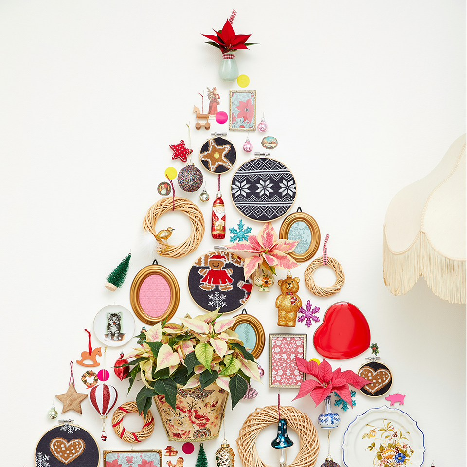
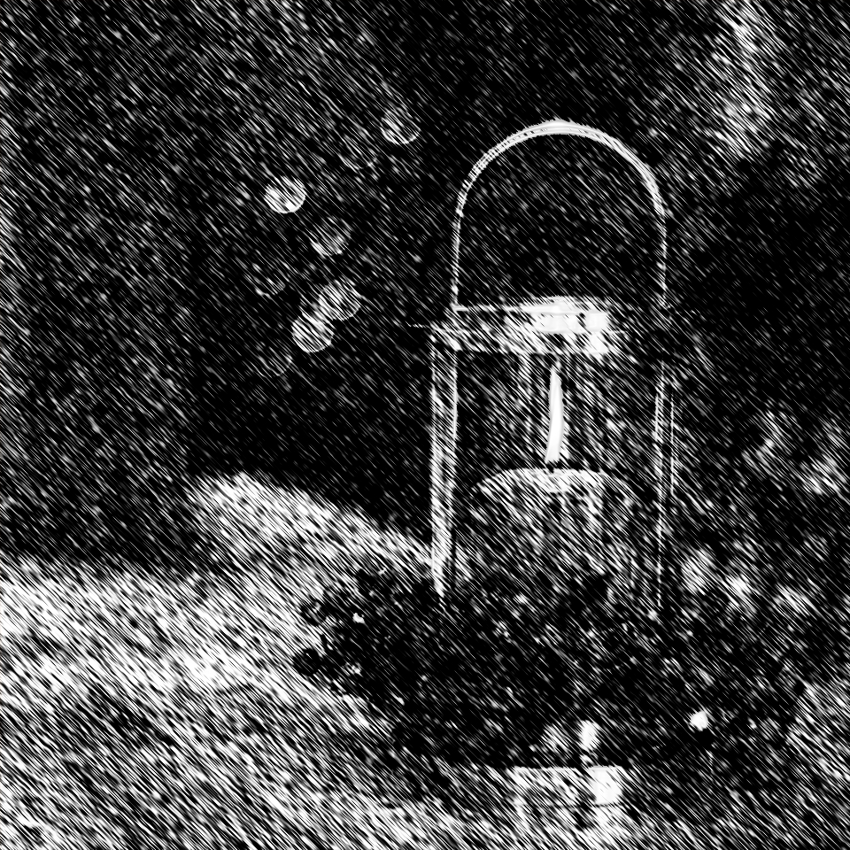
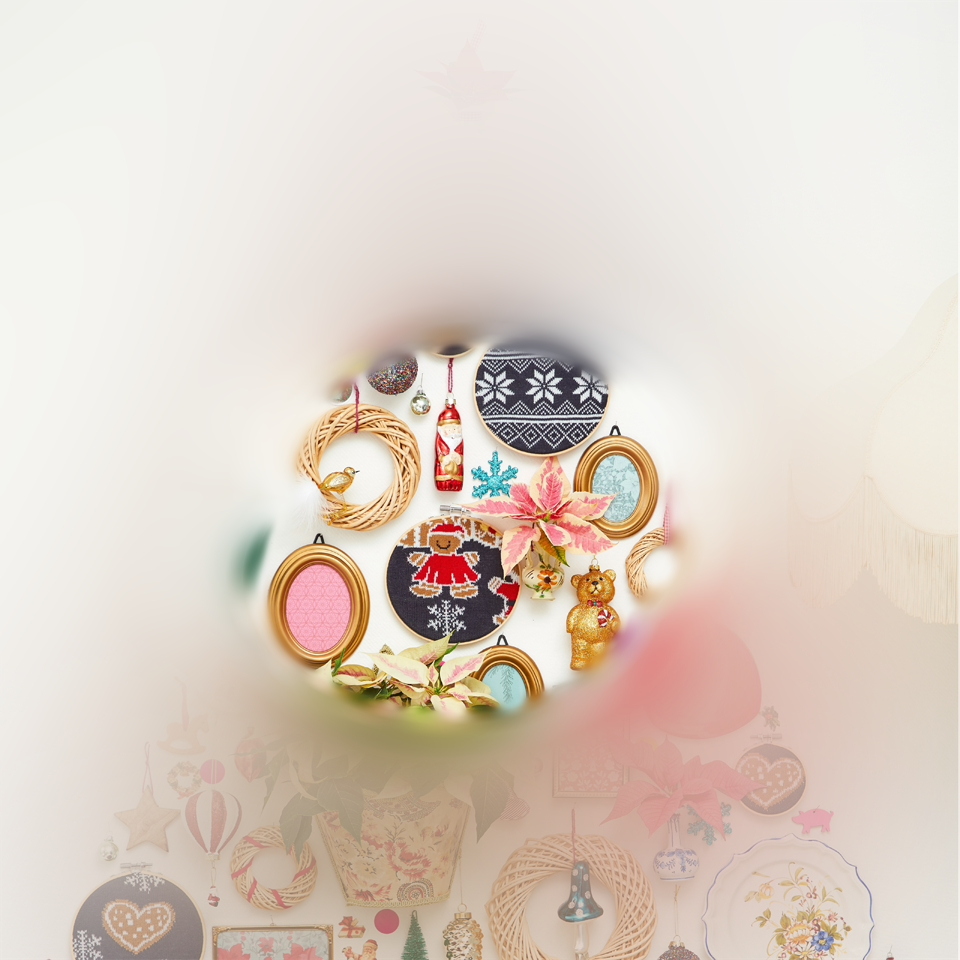
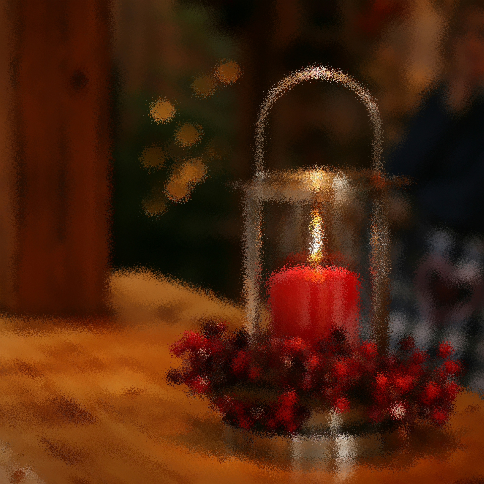
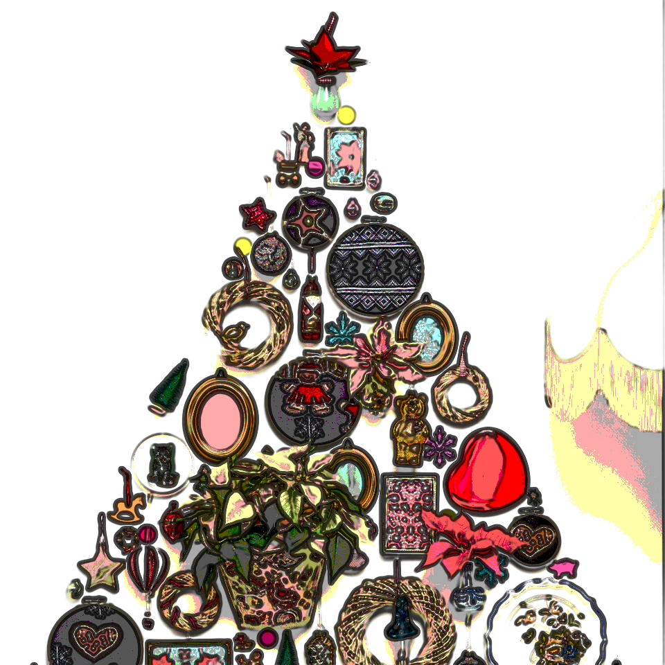
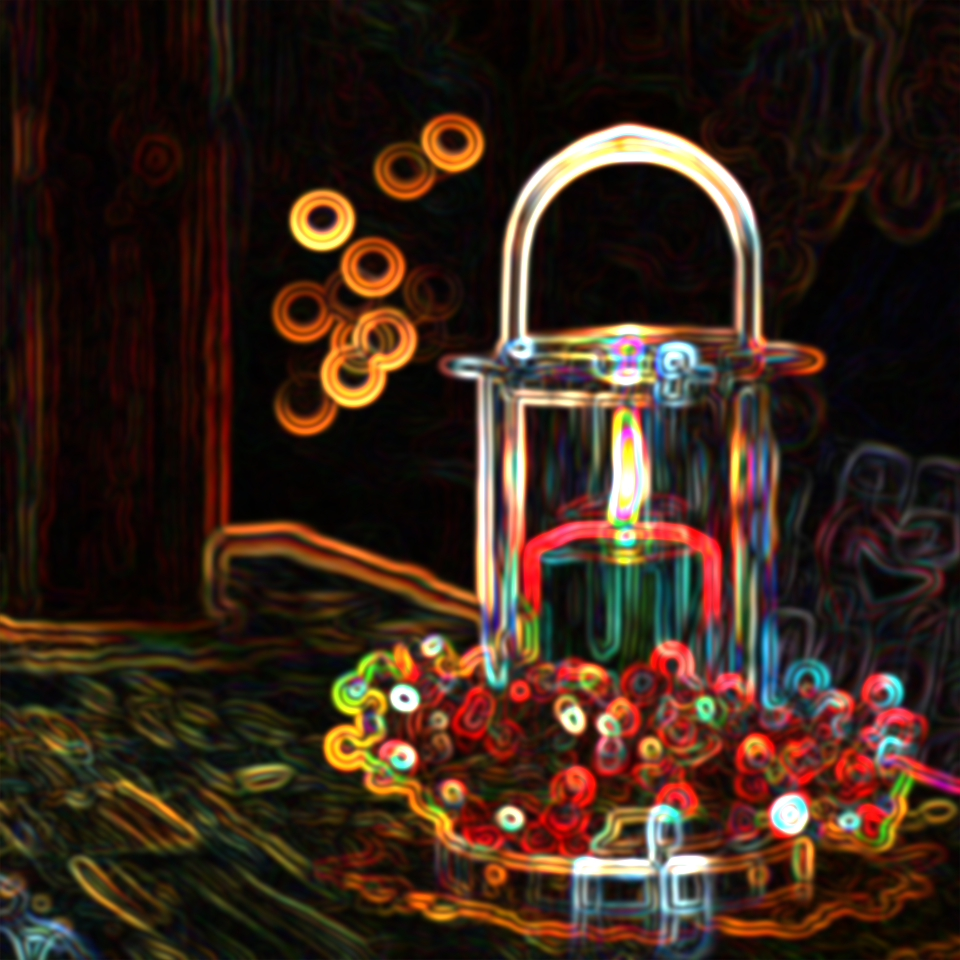
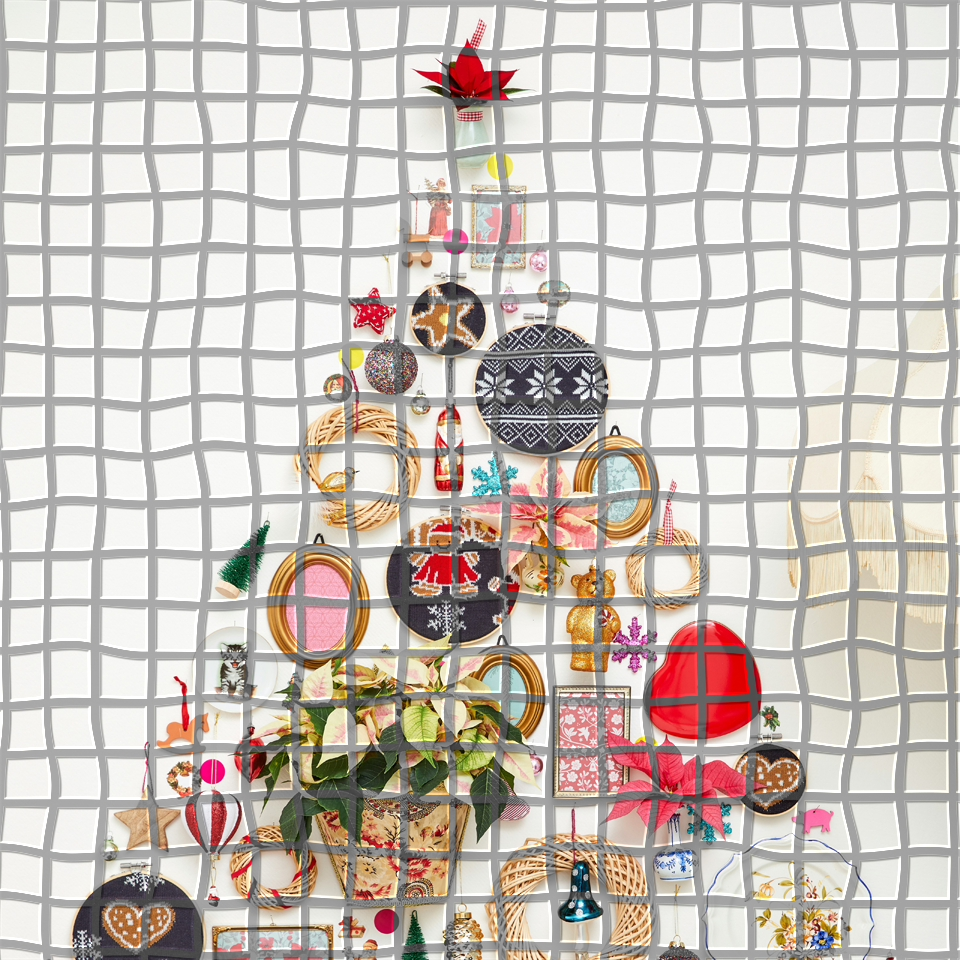

Image 1: Christmas wreath, no filter
Image 5: Red candle, no filter

Image 9: Wall Christmas tree, no filter
Image 13: Christmas ornaments, no filter
Image 2: Emboss filter

Image 6: Charcoal filter

Image 10: Iris blur filter
Image 14: Twirl filter
Image 3: Accented edges filter

Image 7: Glass filter

Image 11: Poster edges filter
Image 15: Sharepen edges filter
Image 4: Crystallise filter

Image 8: Glowing edges filter

Image 12: Mosaic tiles filter
Image 16: Picture frame filter